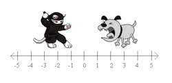
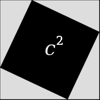

Using what they know from Bootstrap:Algebra, students write a distance function and collision detection function to handle collisions in their games, this time using the Data Structures and Reactor from their games.
Standards with prefix BS are specific to Bootstrap; others are from the Common Core. Mouse over each standard to see its corresponding evidence statements. Our Standards Document shows which units cover each standard.
8.F.1-3: The student defines, evaluates, and compares functions
8.G.6-8: The student uses the Pythagorean Theorem to solve real-world and mathematical problems
explanation of a proof of the Pythagorean Theorem and its converse
application of the Pythagorean Theorem to determine unknown side lengths in right triangles in real-world and mathematical problems in two and three dimensions
application of the Pythagorean Theorem to find the distance between two points in a coordinate system
A-CED.1-4: The student solves equations and inequalities in one or more variable that describe numbers or relationships
A-SSE.1-2: The student interprets the structure of expressions to solve problems in context
F-IF.1-3: The student uses function notation to describe, evaluate, and interpret functions in terms of domain and range
F-LE.5: The student interprets expressions for functions in terms of the situations they model
BS-CE: The student translates between structured expressions as arithmetic, code, and Circles of Evaluation
translating a Circle of Evaluation into its equivalent programming syntax
BS-DR.1: The student is able to translate a word problem into a Contract and Purpose Statement
given a word problem, identify the domain and range of a function
given a word problem, write a Purpose Statement (i.e. - rewrite the problem in their own words)
BS-DR.2: The student can derive test cases for a given contract and purpose statement
given a Contract and a Purpose Statement, write multiple examples or test cases
given multiple examples, identify patterns in order to label and name the variables
BS-DR.3: Given multiple test cases, the student can define a function
given examples and labeled variable(s), define the function
BS-DR.4: The student can solve word problems that involve data structures
write piecewise functions that consume and produce data structures
BS-M: The student models a problem in context and determines the data needed to describe the problem
identifying which quantities are fixed and which are variable
BS-PL.3: The student is able to use the syntax of the programming language to define values and functions
writing test cases
defining and using functions
BS-PL.4: The student is familiar with the syntax for conditionals
defining and using functions than involve conditionals
BS-R: The student is able to write interactive programs using the ’Reactor’ construct
identify how functions work together to create and maintain a complex program
Length: 60 Minutes
Glossary:
helper function: A small function that handles a specific part of another computation, and gets called from other functions
hypotenuse: the side opposite the 90-degree angle in a right triangle
Materials:
Pens/pencils for the students, fresh whiteboard markers for teachers
Class poster (List of rules, design recipe, course calendar)
Editing environment (Pyret Editor)
Student workbooks
Language Table
Cutouts of Cat and Dog images
Cutouts of Pythagorean Theorem packets [1, 2] - 1 per cluster
rectangle circle triangle ellipse star scale rotate put-image
(circle 25 "solid" "red")
The Distance Formula
Overview
Using the Pythagorean theorem and what they know from Bootstrap:Algebra, students write a distance function for their games
Learning Objectives
Evidence Statementes
Product Outcomes
Materials
Pens/pencils for the students, fresh whiteboard markers for teachers
Class poster (List of rules, design recipe, course calendar)
Editing environment (Pyret Editor)
Student workbooks
Language Table
Cutouts of Cat and Dog images
Cutouts of Pythagorean Theorem packets [1, 2] - 1 per cluster
Preparation
The Distance Formula(Time 30 minutes)
The Distance FormulaSo far, none of the animations we’ve created included any distance or collision-detection functions.
However, if you want to make a game where the player has to hit a target, avoid an enemy, jump onto platforms,
or reach a specific part of the screen, we’ll need to account for collisions. This is going to require a
little math, but luckily it’s exactly the same as it was in Bootstrap:Algebra.
This lesson is part of a series of features meant to come at the end of the Bootstrap:Reactive units. Once students
have made a number of simple animations and games, they will have lots of ideas for what they want to
make next and add to their existing games. We’ve included a number of the most requested features in these
lessons. Because each students’ game will be different, we’ve used a Pyret version of the original Ninja Cat
game as an example program, but this lesson can be adapted to add collision detection to any game.

In the image above, how far apart are the cat and dog?
If the cat was moved one space to the right, how far apart would they be?
What if the cat and dog switched positions?
Finding the distance in one dimesion is pretty easy: if the characters are on the same number line, we subtract the smaller coordinate from
the larger one, and we have our distance.
When the cat and dog were switched, did you still subtract the dog’s position from the cat’s,
or subtract the cat’s position from the dog’s? Why?
Draw a number line on the board, with the cutouts of the cat and dog at the given positions. Ask
students to tell you the distance between them, and move the images accordingly. Having students act
this out can also work well: draw a number line, have two students stand at different points on the
line, using their arms or cutouts to give objects of different sizes. Move students along the number
line until they touch, then compute the distance on the number line.
Unfortunately, most distances aren’t only measured in one dimention. We’ll need some code to
calculate the distance between two points in two dimentions.
How could you find the distance between the two points shown in this image?
How could you find the length of the C, also called the Hypotenuse?
Let’s start with what we do know: if we treat the x- and y-intercepts of C as lines A and B, we have a right triangle.
What is the line-length of A? Would it be different if the triangle pointed downward, and intercepted the point (0, -4)?
Draw this image on the board, with the lines labeled "A", "B", and "C".
Ancient civilizations had the same problem: they also struggled to find the distance between points
in two dimensions. Let’s work through a way to think about this problem: what expression computes
the length of the hypotenuse of a right triangle?
This exercise is best done in small groups of students (2-3 per group). Pass out Pythagorean Proof
materials [1,
2] to each group, and have them review all of their materials:
A large, white square with a smaller one drawn inside
Four gray triangles, all the same size
Everyone will have a packet with the same materials, but each group’s triangles are a little different.
The activity workes with triangles of all sizes, so each pair will get to test it out on their own triangles.
Draw the diagram on the board.
For any right triangle, it is possible to draw a picture where the hypoteneuse
is used for all four sides of a square. In the diagram shown here, the white square is surrounded by four
gray, identical right-triangles, each with sides A and B. The square itself has four identical sides of
length C, which are the hypoteneuses for the triangles. If the area of a square is expressed by
, then the area of the white space is .
Have students place their gray triangles onto the paper, to match the diagram.
 By moving the gray triangles, it is possible to create two rectangles
that fit inside the original square. While the space taken up by the triangles has shifted, it hasn’t gotten
any bigger or smaller. Likewise, the white space has been broken into two smaller squares, but in total it
remains the same size. By using the side-lengths A and B, one can calculate the area of the two squares.
What is the area of the smaller square? The larger square?
You may need to explicitly point out that the side-lengths of the triangles can be used as the side-lengths of the squares.
The smaller square has an area of , and the larger square has an
area of . Since these squares are just the original square broken up into two pieces, we
know that the sum of these areas must be equal to the area of the original square:
Does the same equation work for any values of A and B?
To get C by itself, we take the square-root of the sum of the areas:
Pythagoras proved that you can get the square of the hypotenuse by adding the squares of the other two
sides. In your games, you’re going to use the horizontal and vertical distance between two characters
as the two sides of your triangle, and use the Pythagorean theorem to find the length of that third side.
Remind students that A and B are the horizontal and vertical lengths, which are calculated by line-length.
Turn to Page 45 of your workbook - you’ll see the formula written out.
Draw out the circle of evaluation, starting with the simplest expression you can see first.
Once you have the circle of evaluation, translate it into Pyret code at the bottom of the page, starting with
Now you’ve got code that tells you the distance between the points (4, 2) and (0, 5). But we want to have it work for any two points.
It would be great if we had a function that would just take the x’s and y’s as input, and do the math for us.
Turn to Page 46, and read the problem statement and
function header carefully.
Use the Design Recipe to write your distance function. Feel free to use the work from the
previous page as your first example, and then come up with a new one of your own.
When finished, type your distance functions into your game, and see what happens.
Does anything happen when things run into each other?
You still need a function to check whether or not two things are colliding.
Pay careful attention to the order in which the coordinates are given to the distance function.
The player’s x-coordinate (px) must be given first, followed by the player’s y (py),
character’s x (cx), and character’s y (cy). Just like with making data structures, order
matters, and the distance function will not work otherwise. Also be sure to check that students are
using num-sqr and num-sqrt in the correct places.
Collision Detection
Overview
Students write a collision detection function, and modify their next-state-tick function to handle collisions in their games
Learning Objectives
Evidence Statementes
Product Outcomes
Students add collision-detection to their games
Materials
Pens/pencils for the students, fresh whiteboard markers for teachers
Class poster (List of rules, design recipe, course calendar)
Collision DetectionSo what do we want to do with this distance?
How close should your danger and your player be, before they hit each other?
At the top of Page 47 you’ll find the Word Problem
for is-collision.
Fill in the Contract, two examples, and then write the code. Remember: you WILL need to make use of the distance function you just wrote!
When you’re done, type it into your game, underneath distance.
Using visual examples, ask students to guess the distance between a danger and a player at
different positions. How far apart do they need to be before one has hit the other? Make sure
students understand what is going on by asking questions: If the collision distance is small,
does that mean the game is hard or easy? What would make it easier?
Now that you have a function which will check whether two things are colliding, you can use it
in your game! For extra practice, You can also implement collision detection into this
Pyret Ninja Cat game. This is the program we’ll be altering for this lesson, as an example. In Ninja Cat, when the cat collides with the dog, we want to put the dog offscreen so that he can come back to attack again.
Out of the major functions in the game (next-state-tick, draw-state, or next-state-key), which do you think you’ll need to edit to handle collisions, changing the GameState when two characters collide?
We’ll need to make some more if branches for next-state-tick.
Start with the test: how could you check whether the cat and dog are colliding? Have you written a function to check that?
What do the inputs need to be?
How do you get the playery out of the GameState? playerx?
How do you get the dangerx out of the GameState? dangery?
Remember that next-state-tick produces a GameState, so what function should come first in our result?
And what should happen when the cat and dog collide? Can you think of a number that puts the dog off the screen on the left side? What about the dog’s y-coordinate? We could choose a number and always place it at the same y-coordinate each time, but then the game would be really easy! To make it more challenging, we’d like the dog to appear at a random y-coordinate each time it collides with the cat. Thankfully, Pyret has a function which produces a random number between zero and its input: # num-random :: Number -> Number
Collision detection must be part of the next-state-tick function because the game should
be checking for a collision each time the GameState is updated, on every tick. Students
may assume that draw-state should handle collision detection, but point out that the Range
of draw-state is an Image, and their function must return a new GameState in order to set
the locations of the characters after a collision.
Once you’ve finished, write another branch to check whether the player
and the target have collided. Challenges:
Change your first condition so that the danger gets reset only when the player and
danger collide AND the cat is jumping. (What must be true about the player’s
y-coordinate for it to be jumping?)
Add another condition to check whether the player has collided with the danger
while the player is on the ground. This could be a single expression within
next-state-tick, or you can write a helper function called
game-over to do this work, and use it in other functions as well
(maybe the GameState is drawn differently once the game is over.)
For reference, a complete version of the Pyret Ninja Cat game can be found here.

 For any right triangle, it is possible to draw a picture where the hypoteneuse
is used for all four sides of a square. In the diagram shown here, the white square is surrounded by four
gray, identical right-triangles, each with sides A and B. The square itself has four identical sides of
length C, which are the hypoteneuses for the triangles. If the area of a square is expressed by
, then the area of the white space is .
For any right triangle, it is possible to draw a picture where the hypoteneuse
is used for all four sides of a square. In the diagram shown here, the white square is surrounded by four
gray, identical right-triangles, each with sides A and B. The square itself has four identical sides of
length C, which are the hypoteneuses for the triangles. If the area of a square is expressed by
, then the area of the white space is . The smaller square has an area of , and the larger square has an
area of . Since these squares are just the original square broken up into two pieces, we
know that the sum of these areas must be equal to the area of the original square:
The smaller square has an area of , and the larger square has an
area of . Since these squares are just the original square broken up into two pieces, we
know that the sum of these areas must be equal to the area of the original square: